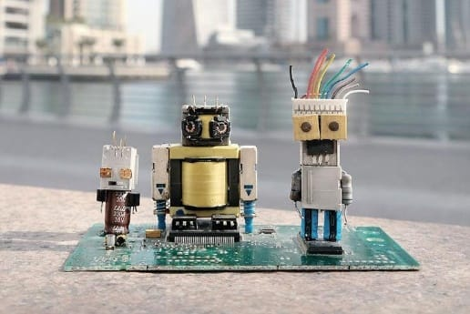

Miniatur Robot dari Komponen Komputer Bekas

Ulasan
Komponen luar komputer bekas dapat disusun menjadi miniatur robot dekoratif. Bentuknya bisa dibuat menyerupai robot futuristik dan dijadikan pajangan meja. Produk ini menonjolkan kreativitas dalam memanfaatkan bentuk komponen yang sudah tidak digunakan.
Alat dan Bahan:
- Tang kecil
- Lem kuat
- Kuas
- Gunting
- Potongan plastik casing komputer
- Sekrup bekas yang aman
- Tombol komputer bekas
- Kardus tebal untuk alas
- Cat akrilik
Langkah Pembuatan:
- Kumpulkan komponen bekas yang bersih dan aman.
- Pilih potongan plastik untuk badan dan kepala robot.
- Gunakan potongan plastik lain untuk membentuk tangan dan kaki.
- Susun komponen di atas meja sebelum direkatkan.
- Rekatkan bagian-bagian menggunakan lem yang sesuai.
- Gunakan tombol komputer sebagai detail dekoratif.
- Warnai miniatur dengan cat akrilik.
- Pasang miniatur pada alas dan pastikan berdiri stabil.
Estimasi biaya dan laba:
- Alat: Tidak ada yang beli (menggunakan peralatan yang sudah tersedia)
- Bahan:
- Komponen bekas=Rp0
- Cat akrilik=Rp6.000
- Alas kardus=Rp3.000
- Hiasan tambahan=Rp3.000
Total harga pokok produksi=Rp17.000
Harga jual=Rp30.000
Laba:Rp30.000-Rp17.000=Rp13.000
← Kembali ke Beranda